Phoenix Travel Guide
Capital and most populous city in Arizona, is also the fifth-most populous city in the United States and is the largest state capital by population


-400.jpg)


Phoenix Map
Places to See in Phoenix
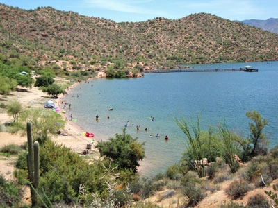
Scotwriter21, CC BY-SA 4.0, via Wikimedia Commons; Image Size Adjusted

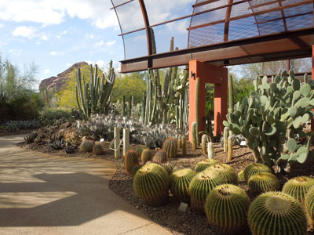
Simeon87, CC BY-SA 3.0, via Wikimedia Commons; Image Size Adjusted

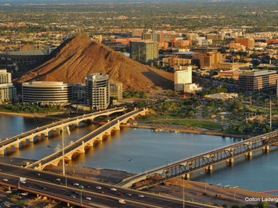
FSXIV, CC BY-SA 3.0, via Wikimedia Commons; Image Size Adjusted

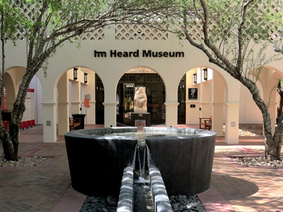
Scotwriter21, CC BY-SA 4.0, via Wikimedia Commons; Image Size Adjusted

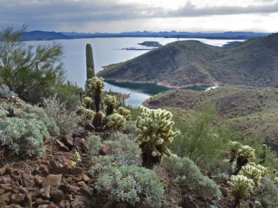
Scotwriter21, CC BY-SA 4.0, via Wikimedia Commons; Image Size Adjusted

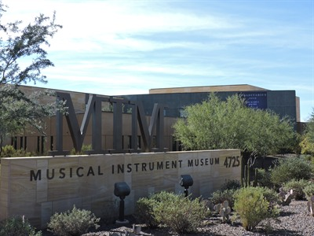
PamMcP, CC BY-SA 4.0, via Wikimedia Commons; Image Size Adjusted

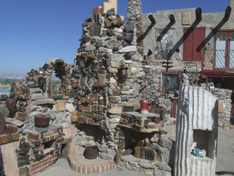
Tony the Marine, CC BY-SA 3.0, via Wikimedia Commons; Image Size Adjusted

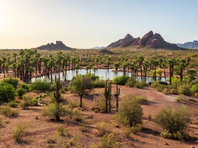
dconvertini, CC BY-SA 2.0, via Wikimedia Commons; Image Size Adjusted

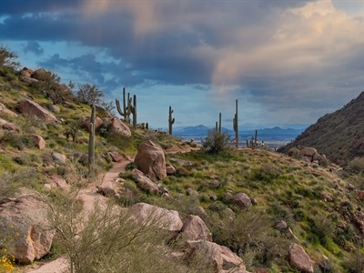
Ray Redstone, CC BY-SA 4.0, via Wikimedia Commons; Image Size Adjusted


Red Mountain Park
A sprawling desert park featuring a scenic lake, paved walking paths, sports fields, and open spaces designed for recreation and wildlife viewing.
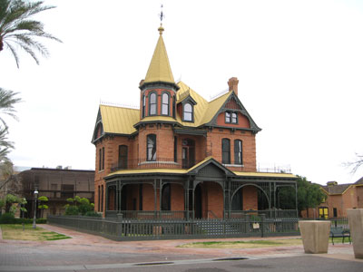
Photograph by Greg O'Beirne, CC BY 2.5, via Wikimedia Commons; Image Size Adjusted

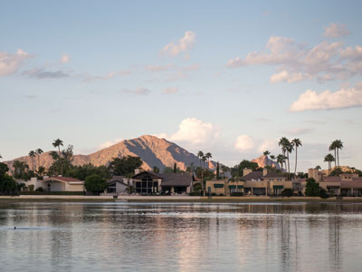
Nicholas Hartmann, CC BY-SA 4.0, via Wikimedia Commons; Image Size Adjusted

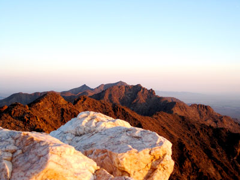
Mikesanchez1109, CC BY-SA 3.0, via Wikimedia Commons; Image Size Adjusted

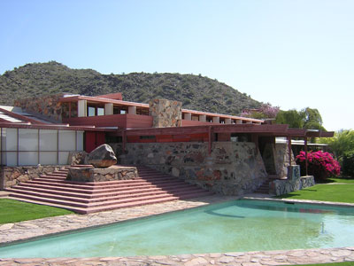
Lar (primary) User:Lar (secondary), Public domain, via Wikimedia Commons; Image Size Adjusted


PamMcP, CC BY-SA 4.0, via Wikimedia Commons; Image Size Adjusted

Overview
Phoenix is Arizona’s capital and largest city and the fifth-most populous city in the United States, with about 1.7 million residents in the city and nearly five million in the metropolitan area known as the “Valley of the Sun.” Surrounded by mountains in the Sonoran Desert, it is famous for its warm, sunny winters, resort-style vacations, desert landscape of towering saguaro cactus, world-class golf and spas, and a population that has grown rapidly since World War II. It is the political and economic center of Arizona, a major hub for semiconductors, aerospace, health care and tourism, and the main gateway to the Southwest through Phoenix Sky Harbor International Airport.
Visitors come to escape the cold, hike desert trails, play golf, relax at spas, watch spring training baseball, and see Native American and Western art, Frank Lloyd Wright’s architecture, and the unique plants and wildlife of the Sonoran Desert. Phoenix gets more sunshine than almost any other large city in the world, and its dry climate and mild winter make it one of the most popular winter destinations in the country. It is also a base for day trips to the Grand Canyon, Sedona, Tucson and the red rocks of northern Arizona.
History. The Hohokam people farmed the valley for over a thousand years, digging hundreds of miles of irrigation canals before they disappeared in the 15th century. Settlers revived the canals in 1867, founding a farming community that was named Phoenix for the new city rising from the ruins of the old. Phoenix was incorporated in 1881, became the territorial capital in 1889 and the state capital when Arizona became the 48th state in 1912. The completion of Roosevelt Dam in 1911 brought reliable water, and the “Five C’s” of cotton, cattle, citrus, climate and copper drove the early economy. After World War II, air conditioning, military bases and high-tech industries fueled explosive growth, and Phoenix is now one of the fastest-growing big cities in the country. Frank Lloyd Wright moved here in 1937 and built his winter home, Taliesin West, giving the region a distinctive architectural tradition.
Scottsdale. Scottsdale, a separate city adjoining Phoenix to the east, calls itself “The West’s Most Western Town” and is known for luxury resorts and spas, upscale shopping, fine dining, golf and nightlife. Old Town Scottsdale features Western-themed shops, more than 100 art galleries (with the Thursday night Art Walk), tasting rooms and restaurants, and the nearby Scottsdale Waterfront and Fashion Square offer shopping. Cultural attractions include Taliesin West, Western Spirit: Scottsdale’s Museum of the West and the Scottsdale Museum of Contemporary Art. North of town, Pinnacle Peak Park and the McDowell Sonoran Preserve offer desert hiking, and the city hosts the WM Phoenix Open golf tournament, Barrett-Jackson car auctions and spring training baseball.
Tempe. Tempe is a lively college city just east of downtown Phoenix and home to Arizona State University, one of the largest universities in the country. Its Mill Avenue District has restaurants, bars, shops and live music, and the two-mile-long Tempe Town Lake is popular for kayaking, paddleboarding and walks. Hayden Butte, known as “A” Mountain, offers a short hike with a city view, and Papago Park, with its red sandstone buttes and Hole-in-the-Rock, borders Tempe and Phoenix. Other highlights include the ASU Art Museum, Gammage Auditorium (designed by Frank Lloyd Wright), the Tempe Center for the Arts and Mountain America Stadium, home of Sun Devil football. The Valley Metro light rail and Tempe Streetcar connect the city to Phoenix and Mesa.
Surrounding Mountains and Parks. The Valley is ringed by mountain ranges and preserves. In the east, the legendary Superstition Mountains, linked to the Lost Dutchman gold mine, rise above Apache Junction and the old mining town of Goldfield Ghost Town, and there are hiking trails, Lost Dutchman State Park and the Apache Trail scenic drive. Usery Mountain Regional Park and Red Mountain Park lie to the east, and San Tan Mountain Regional Park and the Sierra Estrella to the south. To the southwest, South Mountain Park and Preserve, with about 16,000 acres, is one of the largest municipal parks in the country. To the west, White Tank Mountain Regional Park has desert trails and ancient petroglyphs, and to the north are Lake Pleasant Regional Park, Bartlett Lake and Black Mountain. In the northeast, the McDowell Mountains hold McDowell Mountain Regional Park, Pinnacle Peak Park and Tom’s Thumb Trail. In the middle of the city, Camelback Mountain and Piestewa Peak are the most popular urban hikes.
Sightseeing and Popular Landmarks. Top sights include Camelback Mountain, Papago Park with the Phoenix Zoo, the Desert Botanical Garden and Hole-in-the-Rock, Taliesin West, the Arizona State Capitol and Capitol Museum, and the historic homes of Heritage Square, including the Rosson House. Quirky stops include Mystery Castle, a handmade desert castle, Spook Hill, Tovrea Castle and the Wrigley Mansion. Roosevelt Row is a downtown arts district with murals, and Old Town Scottsdale and Mill Avenue are popular for strolling. Day trips lead to the Grand Canyon, Sedona, Tombstone and Lake Havasu.
Culture and Museums. The Heard Museum is one of the best museums of Native American art and culture in the country, and the Phoenix Art Museum is the largest visual art museum in the Southwest. The Musical Instrument Museum displays instruments from around the world, and the Sedav Va’aki Museum (formerly Pueblo Grande Museum) preserves a Hohokam village site. Other museums include the Arizona Science Center, the Children’s Museum of Phoenix, the Hall of Flame Fire Museum, the Penske Racing Museum, Western Spirit and the Scottsdale Museum of Contemporary Art. Performing arts include the Phoenix Symphony, Arizona Opera, Ballet Arizona and Arizona Theatre Company, and the First Friday Art Walk is a popular monthly event.
Parks. Phoenix has one of the largest urban park systems in the country. South Mountain Park and Preserve has more than 50 miles of trails and the Dobbins Lookout, and the Phoenix Mountains Preserve includes Piestewa Peak. Papago Park is home to the zoo and garden, and the Desert Botanical Garden showcases more than 50,000 desert plants. Regional parks such as Lake Pleasant, White Tank Mountain, Usery Mountain and McDowell Mountain offer camping, hiking, mountain biking and boating. The Salt River, in Tonto National Forest, is famous for tubing in summer and for wild horses.
Weather. Phoenix has a hot desert climate with more than 300 days of sunshine a year and less than 10 inches of rain. Winters (December to February) are mild and sunny, with highs in the upper 60s to low 70s °F, and chilly nights, and spring (March and April) brings wildflowers and pleasant temperatures, making January through April the peak season. Summers are extremely hot, with highs commonly above 105 °F and often over 110 °F, and the all-time record of 122 °F was set in 1990. The summer monsoon, from mid-June to the end of September, brings humidity, thunderstorms, flash floods and dust storms called haboobs. Visitors in summer should hike only at dawn, carry plenty of water and never leave children or pets in vehicles; the city may restrict access to some popular trails on extreme heat days, and some attractions have shorter hours in summer. Fall is warm and pleasant by October.
Sports. Phoenix is one of only about a dozen U.S. metro areas with teams in at least three of the four major sports leagues. The Phoenix Suns (NBA, since 1968) and the Phoenix Mercury (WNBA, since 1997) play downtown at the Footprint Center, as do the Arizona Diamondbacks (MLB, since 1998 and 2001 World Series champions) at Chase Field, and the Arizona Cardinals (NFL) play in Glendale at State Farm Stadium, which also hosts the Fiesta Bowl and has hosted Super Bowls. The NHL’s Coyotes moved to Utah in 2024. Phoenix Rising FC (USL) plays soccer, and the Arizona State Sun Devils in nearby Tempe are the area’s major college team. The Valley also hosts NASCAR races at Phoenix Raceway, the WM Phoenix Open at TPC Scottsdale and Cactus League spring training baseball each February and March.
Sources: This article uses material from the Wikipedia articles "Phoenix, Arizona" and "History of Phoenix, Arizona", which are released under the Creative Commons Attribution-Share-Alike License 3.0. Additional information from Visit Phoenix, Experience Scottsdale, Tempe Tourism, Maricopa County Parks & Recreation, the City of Phoenix Parks and Recreation Department, the National Weather Service Phoenix, the Heard Museum, Taliesin West and the official websites of the attractions, museums and teams mentioned.